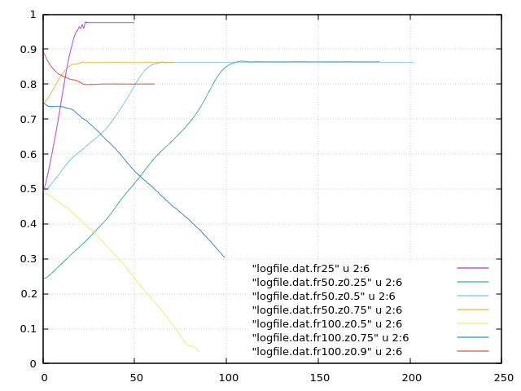

Escudier cylindrical container
Examples of numerical computation of Escudier cylindrical container, H/R=2, bottom lid rotating, ref: Escudier, M. (1988). Vortex breakdown: observations and explanations. Prog. Aerosp. Sci., 25(2):189–229.
SFEMaNS (https://github.com/jean-luc-guermond/SFEMaNS)
Re=Omega*R^2/nu=1852
============================================
Dynamics-NAVIER-STOKES
============================================
===Reynolds number
1.852d3
===Coefficient for penalty of divergence in NS?
1.d0
Mesh: 22057 P2/P1, m=0,1,2,3, mpirun -np 4, dt=2e-3, CFL=1.4 (as rep. by sf), nt=50k
Wall time: 7.6h
Code efficiency=(wall time)/nelem/nt : 2.48e-5 (6.21e-6 assuming that vel mesh is 4 times finer)


Basilisk - based on https://basilisk.fr/src/examples/yang.c - air + some kind of glycerine mixture
Concernant la manip : si notre deuxième phase va être l'air, on a besoin de Froude au moins, disons, vers 50. Prenons des deux disques qu'Antoine a utilisés. On a :
R=140, g=9.81, Omega=sqrt(9.81*50/0.14)=60 rad/s = 600 rpm, qui est assez rapide mais peut-être reste faisable. Pour Re=2000 on a besoin de la viscosité : nu=60*0.14^2/2000 =5e-4, très visqueux mais peut-être faisable.
R=70, g=9.81, Omega=sqrt(9.81*50/0.07)=84rad/s = 840 rpm. Pour Re=2000 on a besoin de la viscosité : nu=84*0.07^2/2000 =2e-4.
free surface : L. Kahouadji, L. Martin Witkowski; Free surface due to a flow driven by a rotating disk inside a vertical cylindrical tank: Axisymmetric configuration. Physics of Fluids 1 July 2014; 26 (7): 072105. https://doi.org/10.1063/1.4890209
Re=500 left and Re=1500 right
Lopez R/H=1 Re=2500
